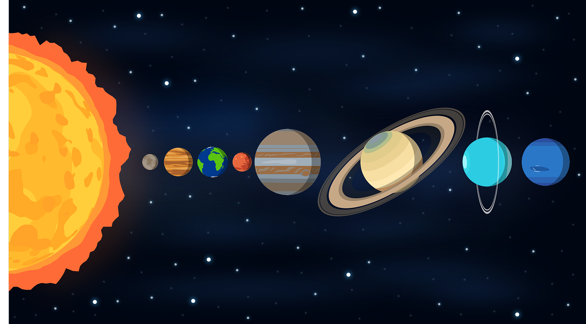
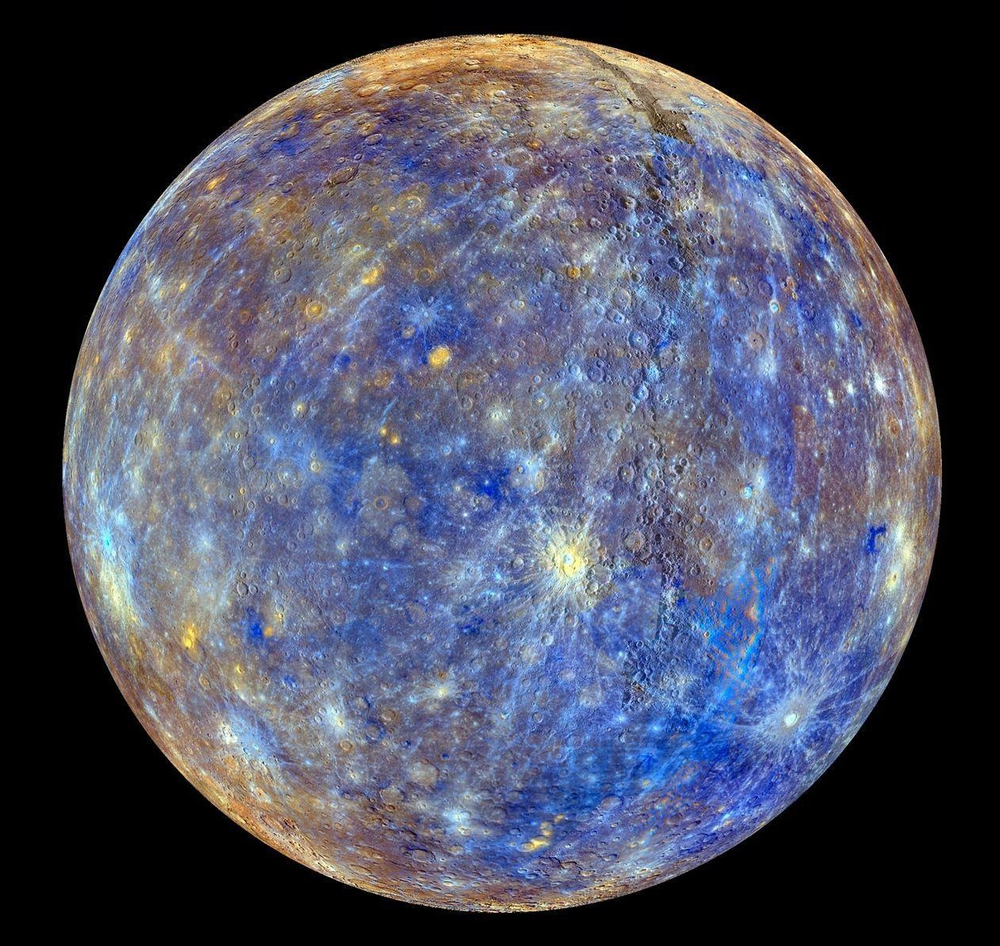
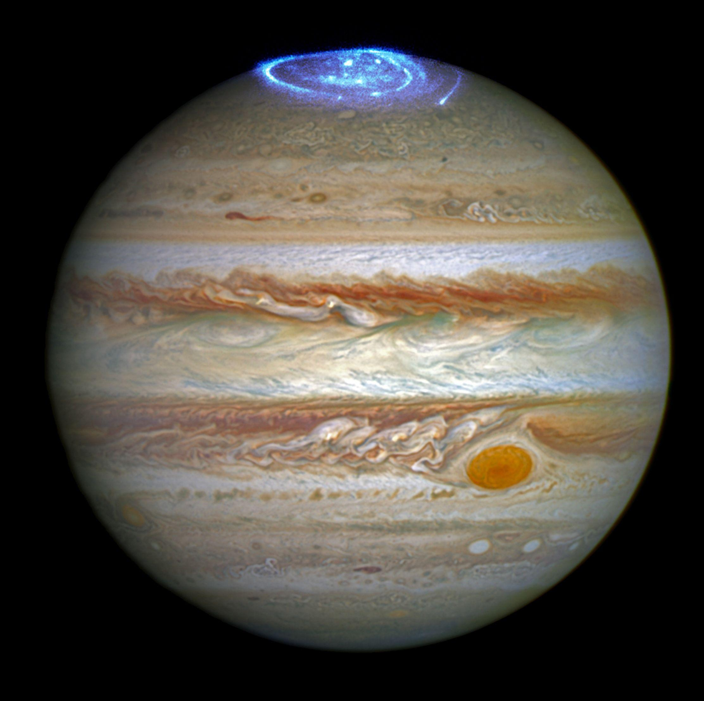
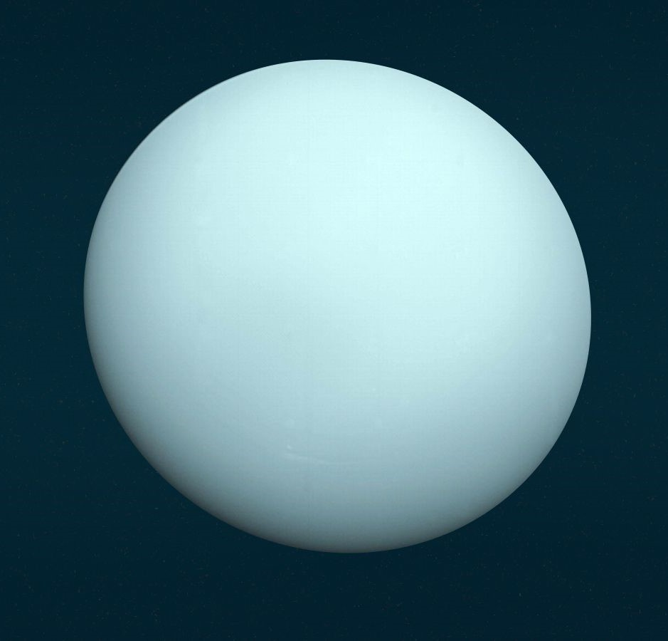
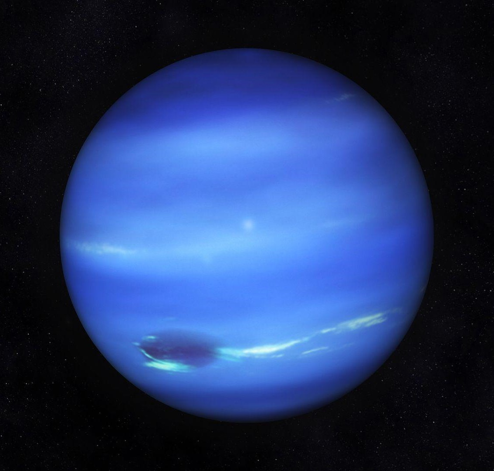

PLANETS
The solar system consists of the Sun; the eight official planets, at least three “dwarf planets”, more than 130 satellites of the planets, a large number of small bodies (the comets and asteroids), and the interplanetary medium. (There are probably also many more planetary satellites that have not yet been discovered.)
SUN

The Sun is the star at the heart of our solar system. Its gravity holds the solar system together, keeping everything – from the biggest planets to the smallest bits of debris – in its orbit.
Mercury
Mercury is the smallest and fastest planet in the solar system. It is also the closest planet to the sun.
Venus

Venus is the second planet from the Sun, and our closest planetary neighbor. It's the hottest planet in our solar system, and is sometimes called Earth's twin.
Earth

Earth is our home planet. Scientists believe Earth and its moon formed around the same time as the rest of the solar system. They think that was about 4.5 billion years ago. Earth is the fifth-largest planet in the solar system.
Jupiter
Jupiter is the largest planet in the solar system. It is approximately 143,000 kilometers (about 89,000 miles) wide at its equator. Jupiter is so large that all of the other planets in the solar system could fit inside it
Saturn

Saturn is the sixth planet from the Sun and the second largest planet in our solar system. Adorned with a dazzling system of icy rings, Saturn is unique among the planets. It is not the only planet to have rings, but none are as spectacular or as complex as Saturn's. Like fellow gas giant Jupiter, Saturn is a massive ball made mostly of hydrogen and helium
Uranus
Uranus is the seventh planet from the Sun, and it's the third largest planet in our solar system about four times wider than Earth. Uranus is a very cold and windy planet. It is surrounded by faint rings, and more than two dozen small moons as it rotates at a nearly 90-degree angle from the plane of its orbit. This unique tilt makes Uranus appear to spin on its side.
Neptune
Neptune is the eighth, and most distant planet from the Sun. It’s the fourth-largest, and the first planet discovered with math. The planet’s rich blue color comes from methane in its atmosphere, which absorbs red wavelengths of light, but allows blue ones to be reflected back into space.
Follow me on Instagram